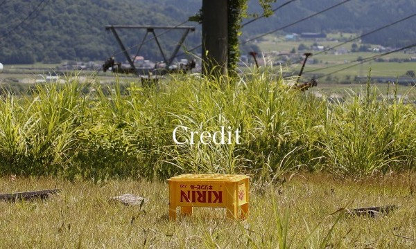

出演：大門 嵩 兎丸 愛美
三江 彩花 森脇 なな 金子 寧々
奥居 元雅 大山 真絵子 真柴 幸平 森 恵美 ／ 壱の木 成 齋藤 博之 宇田川 さや香 赤松 真吾
藤 入鹿 花 細川 佳輝 白奈 里渉 藪田 真衣 ／ 村松 えり 水沢 有礼 佐田 淳 田村 宗慈
でか美ちゃん
監督・脚本：川延 幸紀
撮影：野辺 康介 ／ 録音：早川 竜馬 ／ 音楽：服部 義広 ／ VFX：波多 柾之（やさしい世界）
メイク：MAYUCO ／ 宣伝：西出 壮宏 ／ ロゴデザイン：UDON
2020年 / 日本 / DCP / カラー / 109分 / 5.1chサラウンド
©Backlight Film Co.
1990年生まれ。29歳。横浜国立大学教育人間科学部卒。都内ITベンチャー勤務を経て現在フリーランス。大学卒業後、映画制作チームBacklight Film Co.を立ち上げ、これまで長編2作品を制作。東京の西の果てで育つ。
特別協賛
児玉 健太郎
黒川 和則
Special Thanks
本間 祥生
舘野 正俊
佐藤 陽子
世田谷233
松元 佳彦
前田 剛志
築地 紀和
小幡 祐己
吉崎 謙作
三上 恵司
吉澤 研
小野 敏幸
ラシードハウス
本間 祐樹 (SKALY inc.)
山乃 モトキ
矢野 俊介
中尾 嘉樹 (株式会社StudioGOONEYS)
竹下 想
森脇 なな
chieko
山本 裕一
小西 英夫
水野 新之助
神田 良実
レイコ
鐙塚 翔太
Q-Taka
池田 健悟
どうせそうなるんだよマン
和久本 仁
井上 誠
木賀 賢市
中華料理 安楽
堀 啓太
ちじん
齋藤 博司
鈴木 芳明
高山 健一
鈴木 夏唯
中畑 久生
辻 千尋
木本 学
才本 規史
乗定 裕
1010株式会社
黒田 隆一
山﨑 篤
硲文義